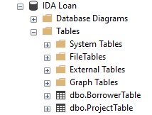
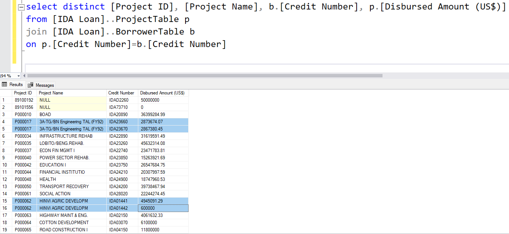
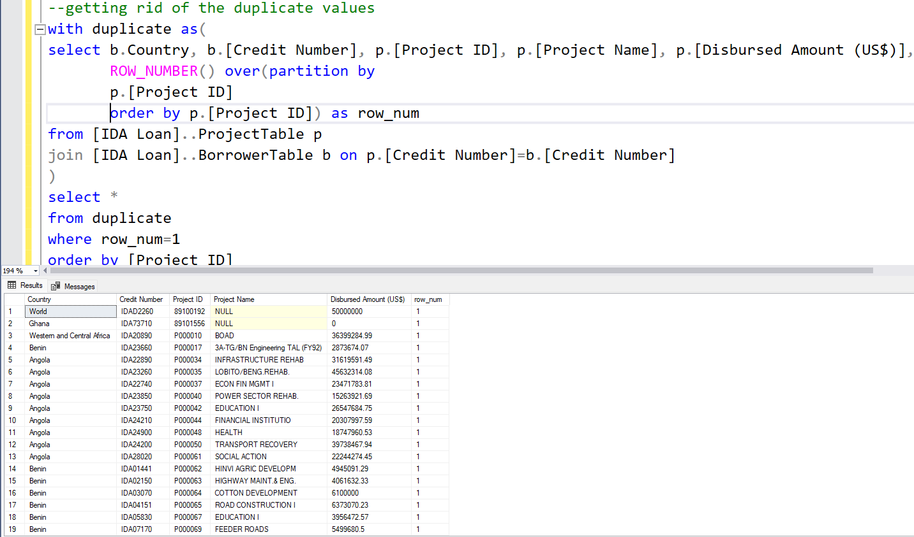
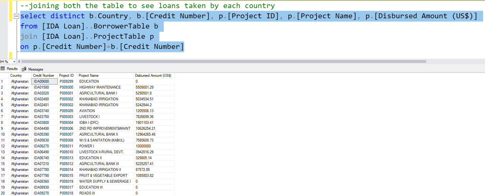
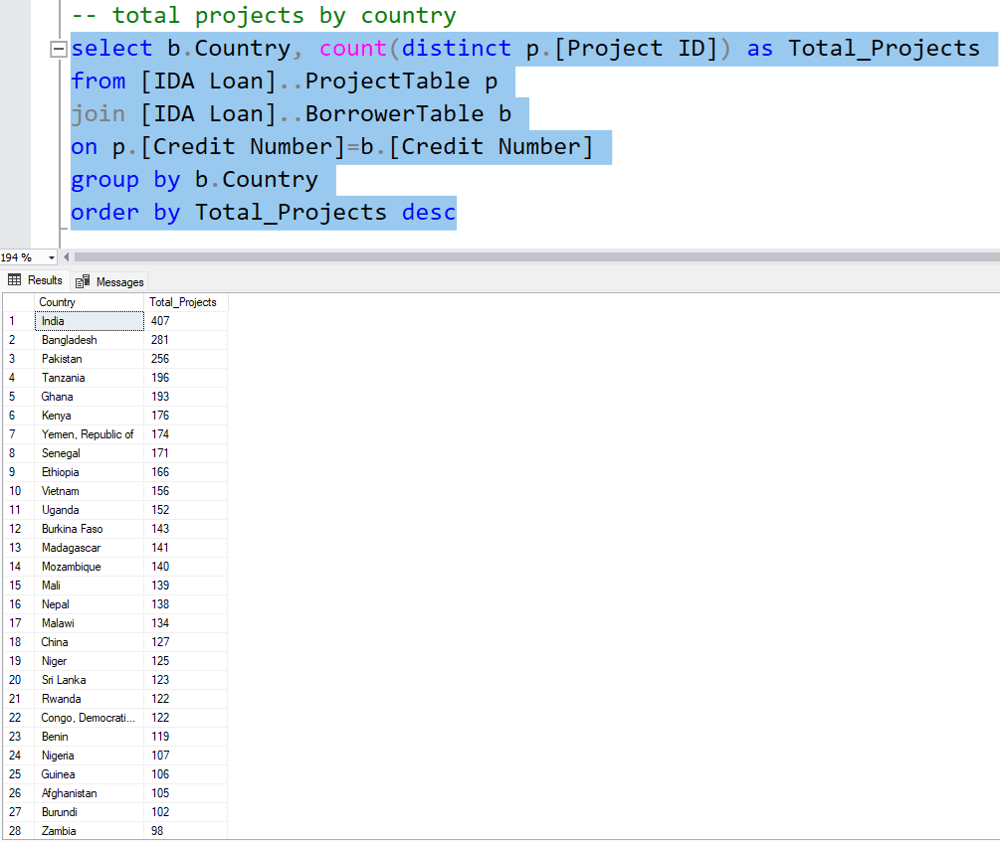
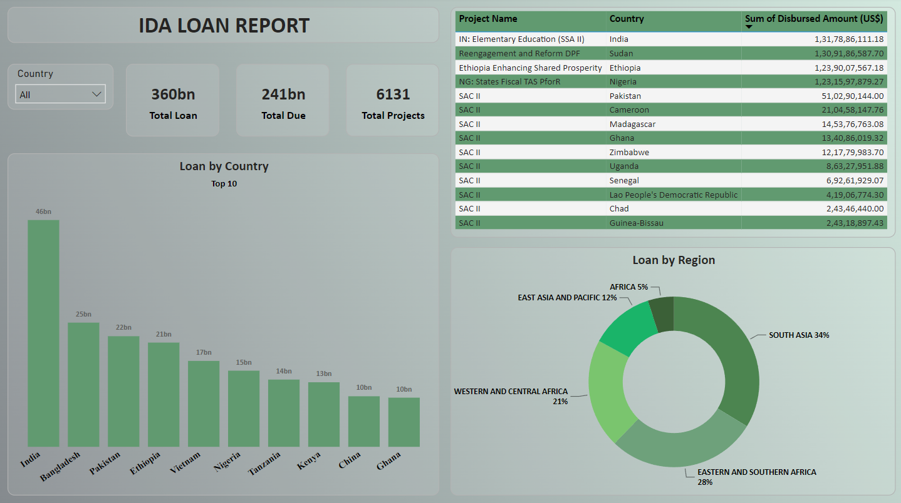

I downloaded the IDA Statement of Credits and Grants dataset from the world bank website. I made a database and created two tables from the dataset and loaded it into SQL Server Management Studio as two tables.
Seeing some data from both the tables
Joined both the table to get overall information.
Something felt fishy about this data. Because I was assuming that the Credit Number and Project ID both will be unique. Like for each Project ID there will be one Credit Number. But the number of rows for both the column weren't same. So I decided to check and realized that for each Project ID there was multiple Credit Number.
There was so many duplicate values so wanted to see only the unique values using a CTE.
I wanted to see all the loans countrywise.
Checking how many projects got grants from IDA for each country.
Finally I built a Power BI dashboard to visualize key insights.
